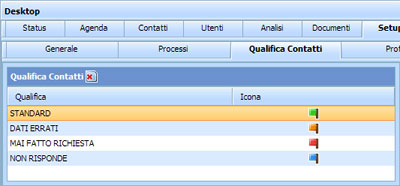

Le bandierine mostrano a seconda del colore una qualificazione del Cliente
 - Cliente con dati Standard
- Cliente con dati Standard - Cliente con Dati Errati
- Cliente con Dati Errati - Cliente Inesistente
- Cliente Inesistente - Cliente che Non ha Disponibilità Economica
- Cliente che Non ha Disponibilità Economica
Queste bandierine si visualizzano nella sezione Contatti.
Aggiungere Qualifica Contatti
Per aggiungere una nuova Qualifica Contatti:
posizionarsi sulla prima riga vuota doppio click del mouse nel campo che si intende scrivere inserire la Qualifica Contatti inserire l'icona scegliendo tra quelle proposte
Modificare Qualifica Contatti
Per modificare una Qualifica Contatti già esistente:
posizionarsi sulla riga che si intende modificare doppio click del mouse nel campo in cui si intende intervenire modificare la dicitura della Qualifica Contatti modificare l'icona scegliendo tra quelle proposte
Eliminare Qualifica Contatti
Per eliminare una qualifica bisogna essere sicuri che non sia stata assegnata a nessun Cliente
posizionarsi sulla riga che si intende eliminare doppio click del mouse nel campo in cui si intende intervenire cancellare la dicitura della Qualifica Contatti cancellare l'icona scegliendo tra quelle proposte l'icona vuota